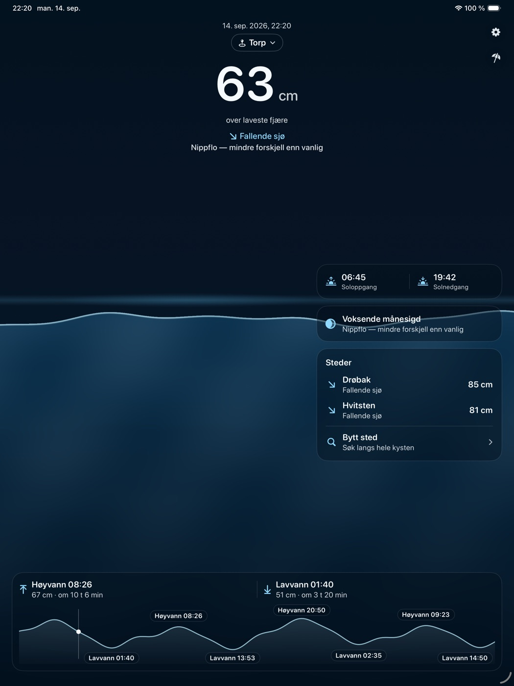
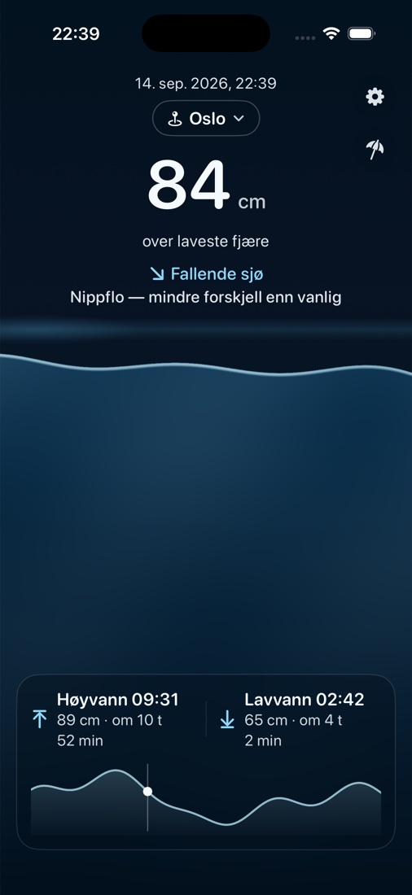
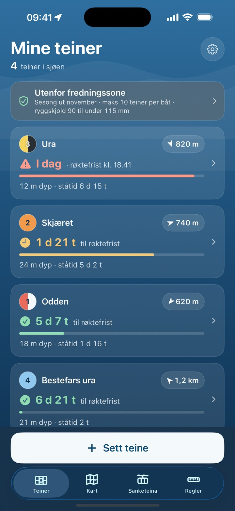

utgivelser
nyeste øverst
-
Neste app? Den er under arbeid.
-
Hummerfiske 1.0.1 Sikrere posisjon når du setter teiner, og du kan rette posisjonen på kartet. Takk til dere som sa fra.
-
Flo og Fjære 1.3 Nå også på iPad, og du kan velge sted rett fra kartet.
-
Hummerfiske 1.0 Første utgivelse, drøye to uker før hummersesongen.
-
Flo og Fjære 1.1 Nytt ikon, og Pro: springflokalender, søk etter fjæretid og varsel når sjøen passerer et nivå.
-
Flo og Fjære 1.0 Første utgivelse. Tidevann for hele kysten, uten internett.
ute siden 12.08.2026 · versjon 1.3 · iPhone og iPad
Flo og Fjære
Vannstand akkurat nå, uten internett.
Tidevannet i Oslo, fra seks timer siden til 18 timer fram, i centimeter over laveste fjære. Regnet ut i nettleseren din med appens modell og Kartverkets konstanter. Astronomisk tidevann, ikke til navigasjon.
Flo og Fjære regner ut tidevannet på telefonen, for 4 372 kystpunkter fra svenskegrensa til Svalbard. Den virker i flymodus, på hytta og i båten, og viser vannstanden som en levende sjø.
Vannstanden akkurat nå. Bildet er fra Oslo 14. september kl. 22.39. Regnet ut her for samme sted akkurat nå: 85 cm over laveste fjære, fallende sjø.
To døgn på iPad. På iPad fyller sjøen hele skjermen, med to døgns kurve nederst.


ute siden 15.09.2026 · versjon 1.0.1 · iPhone
Hummerfiske
Glem aldri hvor teinene står.

Hummerfiske holder orden på teinene gjennom sesongen: hvor de står, når de skal røktes og hvilke regler som gjelder der båten er.
Røkteklokka. Hver teine får sin frist. Loven krever røkting minst én gang i uka, og appen varsler før det haster.
Fredningssonene. Fiskeridirektoratets fredningssoner og nullfiskeområder ligger i appen, på Kartverkets sjøkart. Appen viser om båten er utenfor, og hvilke regler som gjelder der.
Sett teine. Trykk der båten er, eller hold inne på kartet der teina faktisk står.
Røkteklokka, sonene og reglene er med for alle. Med Pro kan du holde orden på flere enn fire teiner, se vær ved hver teine og se hva som fisker best: agn, dybde og plass.
prinsipper
det samme for alle appene
-
Alt lokalt. Dataene dine bor på telefonen din.
-
Null sporing. Ingen annonser, ingen analyseverktøy, ingen kontoer.
-
Åpne data der det finnes. Alltid med kilden kreditert, foreløpig Kartverket, Fiskeridirektoratet og MET.
-
Ærlige verktøy. Appene lover bare det de faktisk holder.
kontakt
Spørsmål, feil eller forslag?
Skriv til meg. Jeg leser alt og svarer så godt jeg kan, men dette er et fritidsprosjekt, så jeg lover ingen svartider.
danielhellenes@me.com